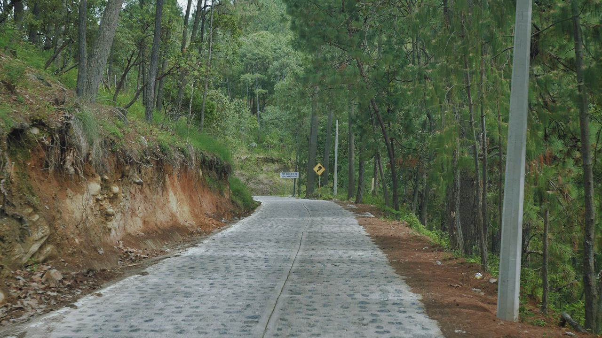

Tide Out.
A feed with room to stop.

TAKE A SMALL BREAK
Why do you want
to scroll?
Take a moment to check in before you begin.
Break time · 5 min
Your pace, your choice. Pause whenever you need.
Turn on an effect, then swipe up or press Next.
Silent clips · Percentages show effect strength.
How it works
Choose your reason for scrolling. As you move through the feed, busy streets and everyday moments give way to trees, water and sunset. The sequence ends with a chance to pause.
The four side buttons change the video: Slow lowers playback speed, Space makes the picture smaller, Colour lowers saturation, and Dim lowers brightness.
Each percentage shows effect strength: 0% is off, 10% is the starting level, and 100% is the strongest effect. It increases by 18 percentage points with each video change. You can combine effects, switch any one off, or use Restore.
Student prototype. Your reason stays on this page and does not change the effects automatically. Wellbeing benefits have not been tested.